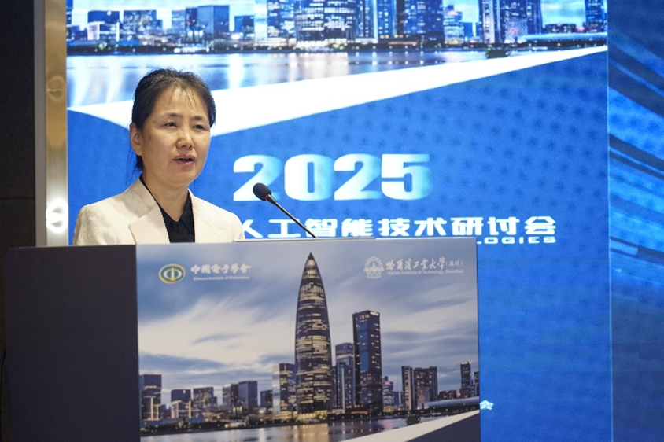
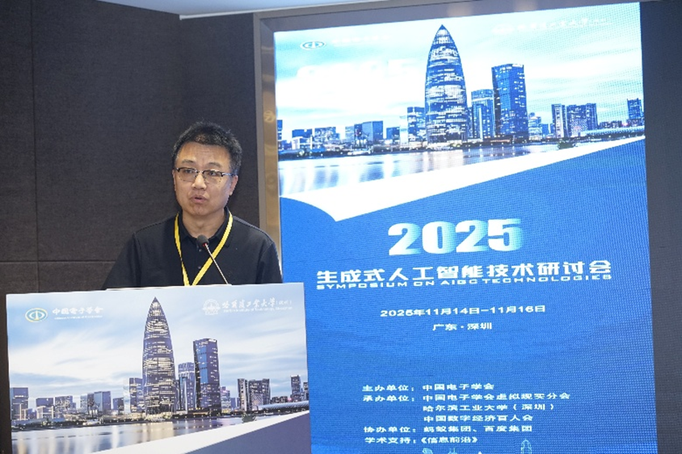
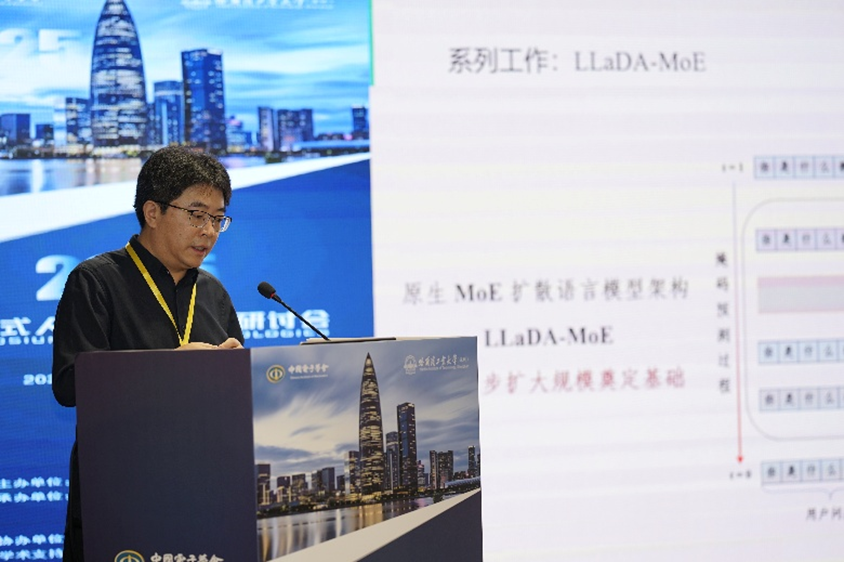
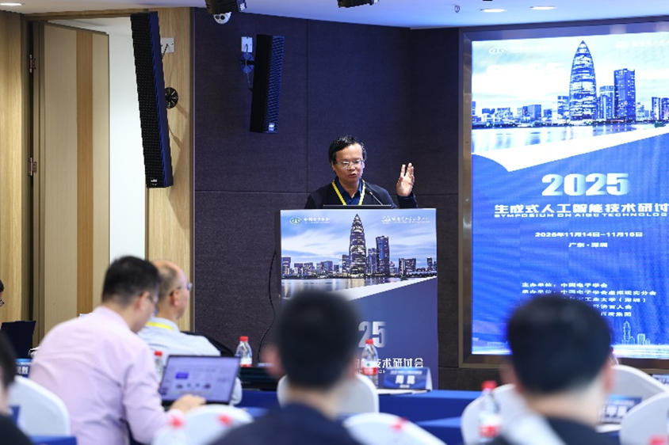
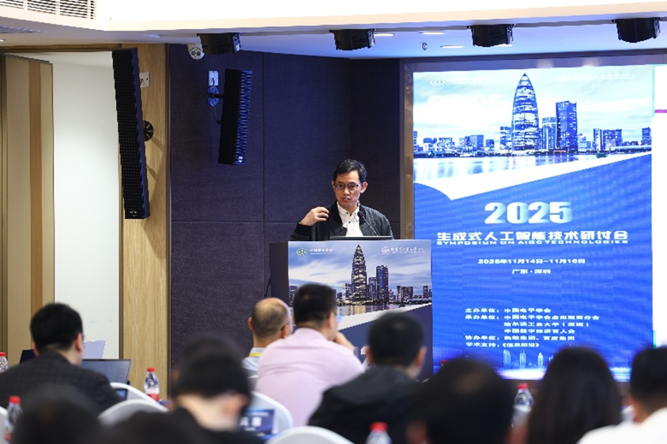

实验室成功承办2025生成式人工智能技术研讨会
2025年11月15日至16日，由中国电子学会主办，中国电子学会虚拟现实分会、哈尔滨工业大学（深圳）、中国数字经济百人会共同承办，蚂蚁集团、百度集团协办，《信息前沿》学术支持的2025生成式人工智能技术研讨会在广东深圳成功召开。

本次研讨会由中国电子学会虚拟现实分会主任委员、浙江大学周昆教授，以及虚拟现实分会副主任委员、哈尔滨工业大学（深圳）俞俊教授共同担任大会主席；哈尔滨工业大学（深圳）黄强教授和浙江大学邵天甲教授担任大会秘书。中国电子学会副秘书长王天虹，哈尔滨工业大学（深圳）副校长李兵，中国电子学会虚拟现实分会主任委员、浙江大学教授周昆出席研讨会并致辞。来自清华大学、北京大学、哈尔滨工业大学、哈尔滨工业大学（深圳）、浙江大学、中国科学技术大学、中国人民大学、北京航空航天大学、南开大学、大连理工大学、北京科技大学、合肥工业大学、深圳大学、南方科技大学、重庆邮电大学、青海师范大学、蚂蚁集团、百度集团等单位的专家，围绕生成式人工智能的最新技术进展、应用实践探索、未来重点方向等展开深入研讨。



会议期间，二十余位权威嘉宾依次登台作专题报告，报告内容紧扣生成式人工智能前沿主题，覆盖大模型基础理论、多模态生成、世界模型、行业场景应用等多个核心板块，兼具理论高度与实践指导性。其中，张民教授围绕以自然语言为核心的新一代人工智能发展战略，系统阐述领域发展布局与技术路线；文继荣教授聚焦扩散大语言模型新范式，分享底层架构创新与前沿突破；田永鸿教授立足动态开放环境世界模型构建，深入解读关键技术与应用前景；黄民烈教授聚焦多模态大模型及其对齐与安全性，分享前沿探索与实践成果。




其余各位嘉宾也分别从图像检测、算法进化、数据空间、数字人、视觉生成、工业大模型等细分议题展开深度分享，既有对行业痛点的精准剖析，也有对未来发展的科学展望，全方位、多角度为参会人员呈现了一场专业深度的学术与产业交流盛宴。
在整个会议过程中，学者们不仅展示了在生成式人工智能基础理论与关键技术方面的扎实工作，更是推动了行业优秀学术力量的深度联动，进一步拓展了学术合作网络。此次研讨会的成功举行，既为我国生成式人工智能技术的发展指明前行之路，也有力推动了行业内技术深度交流，使我国在这一前沿技术领域的探索步伐更为坚实。
未来，中国电子学会将持续发挥行业平台优势与资源整合能力，常态化搭建高水平学术交流与技术协作桥梁，持续助力生成式人工智能技术创新突破与发展。我们也将持续聚焦领域核心科学难题与关键技术瓶颈集中攻关，深度融入国家人工智能创新发展战略体系，以科技创新驱动产业升级，为我国人工智能产业长效健康发展注入强劲动能。